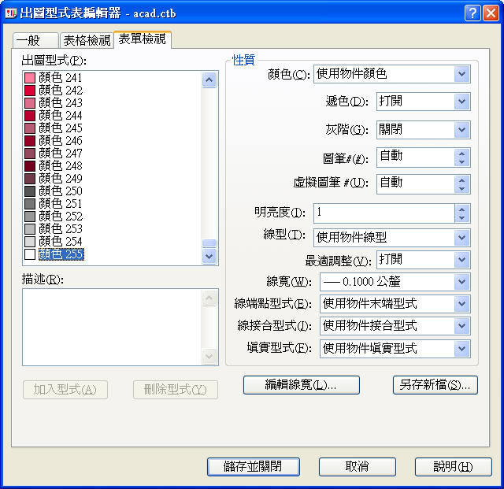
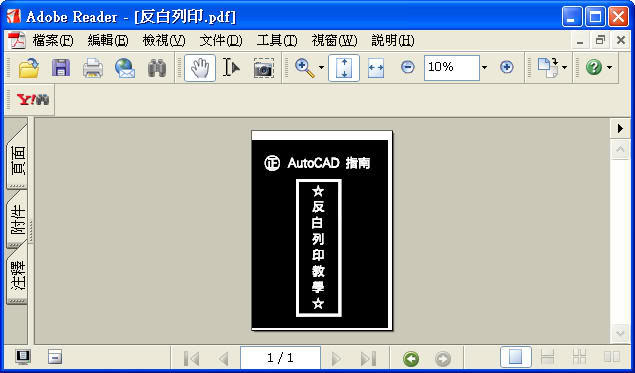

請問有任何大大知道AUTOCAD要怎麼反白列印嗎?
希望印出來的線是白的,背景是黑的~
一般 AutoCAD 在「選項」對話方塊 →「顯示」標籤 → 顯示「顏色選項」對話方塊。
說明:使用此對話方塊指定主要應用程式視窗中的元素顏色。也就是說 背景顏色 再出圖的時候是沒有任何作用的。
而 AutoCAD 沒有反白列印的選項，如果需要在 PDF 檔有反白的效果，你必須把你的出圖版面先上色，使用 HATCH 指令來填實版面區域，再來寫文字(255色)或劃線(255色)，出圖成 PDF 檔即有反白的效果。
以下方法為 一般方式 提供給你參考，有問題請再提~
當然，也可使用 進階技巧方式 更方便，不果有點小複雜有興趣再提!
※※※ AutoCAD 2000 以上版本 ※※※
1.「選項」對話方塊 →「顯示」標籤 → 顏色 ....選擇白色。

2.新增圖層1 → 顏色為 255 色。

3.繪製A4版面 → 使用 HATCH 指令 → 填實版面區域→ 使用圖層1寫文字或劃線。

4.PLOT 指令 → 出圖型式表編輯
5.將 出圖型式 顏色255 → 明亮度 由 100 改為 1 → 儲存並關閉

6.完成出圖步驟 → 輸出成 PDF 格式 即可

「教學」AutoCAD 反白列印效果
https://www.autocad-tw.com/t101-topic
爬完文章的朋友，不論你覺得是否有幫助，也請您要記得評價喔~
無論是正面或負面的評價，我都樂意接受因為你的支持與批評是我最大的動力~